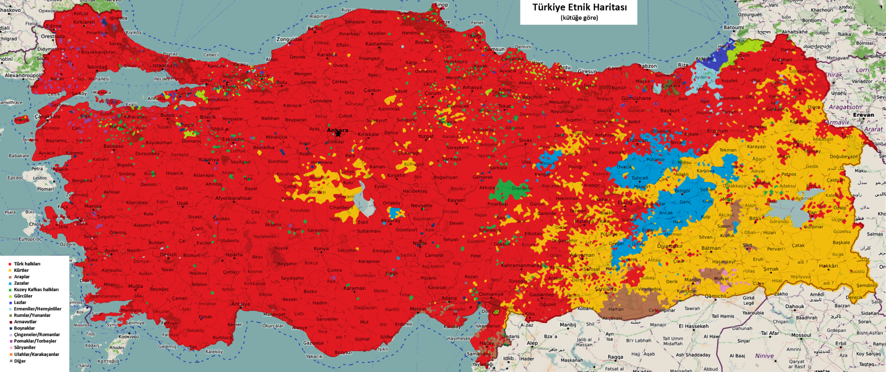
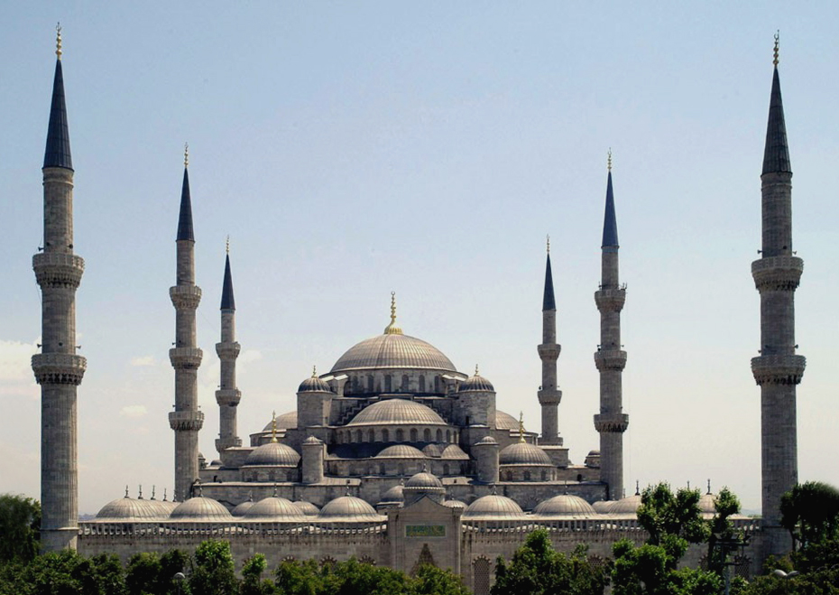
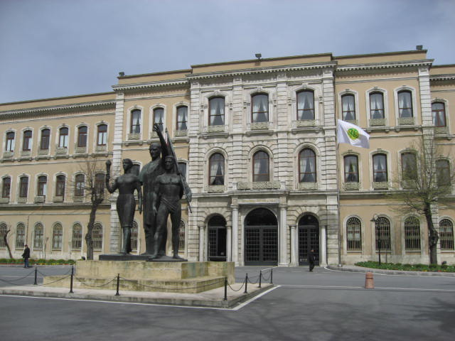

Demografi
Adrese Dayalı Nüfus Kayıt Sistemi sonucunda elde edilen verilere göre 31 Aralık 2021 itibarıyla Türkiye'nin nüfusu 84 milyon 680 bin 273 kişidir. Bu rakam, ilk resmî nüfus sayımının yapıldığı 1927 yılında 13,6 milyondu. 2017 yılındaki rakam, 2016 yılındaki rakamın 995 bin fazlasıdır ve ülkenin nüfusunun artış oranı %12,4'tür. Nüfusun %92,5'i il ve ilçe merkezlerinde yaşamaktadır. Yine aynı verilere göre Türkiye'de km2 başına ortalama 105 kişi düşmektedir. Nüfusun %67,9'u 15-64 yaş grubunda yer alırken %23,6'sı 0-14 yaş grubunda yer almaktadır. Yaklaşık %8,5'lik bir kısım ise 65 ve üstü yaşlardaki kişilerden oluşmaktadır. Nüfusun ortanca yaşı 31,4'tür. Türkiye'nin en gelişmiş ve en kalabalık şehri İstanbul'dur. Ayrıca Avrupa'nın en kalabalık üçüncü şehri unvanını da taşımaktadır.
Dil ve etnisite
Türkiye Anayasası'nın 66. maddesi, "Türk Devletine vatandaşlık bağı ile bağlı olan" herkesi, bir "Türk" olarak tanımlar. Bu nedenle, Türkiye'de hukukî anlamda Türk sözcüğü, bir etnik kökeni ifade etmekten ziyade ülkenin vatandaşı olan herkesi ifade etmektedir. Ülkenin büyük çoğunluğunun etnik kökeni Türk'tür. Ülke nüfusundaki Türklerin oranı CIA'e göre %70-75, Konda'ya göre %76 ve Konsensus'a göre %77'dir. Nüfusun etnik dağılımına ait pek çok veri olmasına rağmen, Türkiye'de yapılan resmî nüfus sayımları etnik kökene ait rakamlar vermediği için resmî veriler mevcut değildir. Yapılan araştırmalara göre Türkiye'de Arnavutlar, Azeriler, Araplar, Boşnaklar, Çerkesler, Çingeneler, Gürcüler, Hemşinliler, Lazlar, Pomaklar, Süryaniler ve Zazalar dahil olmak üzere pek çok etnik grup yaşasa da, ülkede resmen tanınan azınlıklar sadece Ermeniler, Rumlar ve Yahudilerdir. Bu tanınmayı Lozan Antlaşması ile birlikte elde etmişlerdir. Türklerden sonra, ülkede yaşayan en büyük etnik grup Kürtlerdir. Kürtlerin nüfus içindeki oranı CIA'e göre %18, Konda'ya göre %15, Konsensus'a göre %14'tür. Kürtler ülkenin doğu ve güneydoğu kısımlarında yoğunlaşmıştır. Bingöl, Muş, Ağrı, Iğdır, Diyarbakır, Batman, Şırnak, Bitlis, Van, Mardin, Siirt ve Hakkâri illerinde Kürt nüfus çoğunluktadır; bunun yanı sıra Şanlıurfa'da %47 ile nüfusun çoğunluğa yakınını ve Kars'ta %20 ile büyük bir azınlık grubunu oluşturur. Ayrıca yıllardır gerçekleşen iç göçlerle birlikte Kürtler, ülkenin ortasındaki ve batısındaki tüm büyük şehirde de yaşamaktadır. Özellikle İstanbul'da yaklaşık 3 milyon Kürt yaşamaktadır ve bu durum şehri, dünya üzerinde en fazla Kürt nüfusuna sahip şehir yapmaktadır. CIA'e göre Türkler ve Kürtler dışındaki diğer azınlıkların oranı ise %7-12'dir. Tanınan üç azınlık dışında kalan diğer azınlıklar için belirlenmiş özel haklar yoktur. "Azınlık" terimi, Türkiye'de hassas bir konudur ve hassas olmaya devam etmektedir. Hukukî anlamda azınlıkları tanımasa da devlet, resmî kanalı TRT'ye, azınlıkların konuştuğu çeşitli dillerde radyo ve televizyon programları yapması konusunda izin vermektedir.
2020 itibarıyla resmi olarak 3,6 milyondan fazla Suriyeli mülteci ile dünyanın en çok Suriyeli mülteci barındıran ülkesi oldu.
Türkiye'nin resmî dili, aynı zamanda nüfusun %85'inin anadili olan Türkçedir. Nüfusun yaklaşık %12'si ise ana dil olarak Kürtçe konuşmaktadır. Arapça ve Zazacayı ana dil olarak konuşanların oranı da %1'den fazladır, bunun yanı sıra çeşitli bölgelerde küçük bir kesim tarafından ana dil olarak konuşulan diller de mevcuttur.[18] Ayrıca Türkiye'de konuşulan dillerden bazıları tehlike altındadır. Bunlara Abazaca, Abhazca, Batı Ermenicesi, Çerkesçe, Çingenece, Doğu Çerkesçesi, Hemşince, Hertevince, Kapadokya Yunancası, Lazca, Pontus Rumcası, Ubıhça, Yahudi İspanyolcası ve Zazaca örnek verilebilir.
Türkiye etnik haritası. (kütüğe göre)
Din
Türkiye, resmî dini olmayan laik bir devlettir. Din ve vicdan özgürlüğü, ülkenin anayasasıyla güvence altına alınmıştır. Ancak ülkede çeşitli İslami partilerin kurulmasıyla birlikte, dinin yönetimdeki rolüyle ilgili tartışmalar ortaya çıkmıştır. Ülkede kamu kurumlarında ve okullarda uzun yıllar boyunca İslami siyaset sembolü olarak görüldüğü için başörtüsü takılması yasaklandı. Bu yasağa 2011 yılında üniversitelerde, 2013 yılında kamu kurumlarında ve 2014 yılında diğer okullarda son verildi.
Türkiye'de baskın din İslamdır. Yaygın mezhep ise Sünnilik mezheplerinden biri olan Hanefiliktir. Ülkedeki en yüksek İslami makam Diyanet İşleri Başkanlığı'dır ve Hanefi mezhebinin kurallarına göre dini yorumlar. Ülke topraklarındaki 90.000'i aşkın kayıtlı camiden ve buralarda görevli imamlardan da sorumludur. Ayrıca ülkede Alevilik de yer yer yaygındır ve akademisyenler Alevi sayısının 15-20 milyon arasında olduğunu öne sürmektedir.
Türkiye'de Hristiyanların oranı 1914'te %25-20 iken 1927'de %5-3'e geriledi ve bugün %0,4-0,3 arasında değişmektedir. Günümüzde ülkede Rum Ortodoksluğu, Katoliklik, Protestanlık ve Mormonluk dahil olmak üzere çeşitli mezheplerden birçok Hristiyan bulunmaktadır ve bu rakam yaklaşık olarak Türkiye'nin nüfusunun %0.3'ü kadardır. Ülkede açık olan kilise sayısı ise 398'dir. İstanbul, 4. yüzyıldan bu yana Doğu Ortodoks Kilisesi'nin merkezi konumundadır.
Türkiye'de, çoğu Sefarad kökenli olan 15.000 Yahudi yaşamaktadır. MÖ 5. yüzyıldan itibaren Anadolu topraklarında Yahudi toplulukları yaşamaya başladı ve yirmi yüzyıl sonra, 15. yüzyıl sonlarında İspanyol ve Portekiz Yahudilerinin İspanya'dan kovulmasıyla birlikte Osmanlı İmparatorluğu, bu Yahudilerin günümüzdeki Türkiye topraklarına yerleşmesine izin verdi. Böylece Anadolu'daki Yahudi nüfusu arttı. 20. yüzyıldaki göçlere rağmen, bugün hâlâ küçük bir Yahudi nüfusu Türkiye'de bulunmaktadır.
İstanbul'daki Sultan Ahmet Camii, içerisinin İznik çinileriyle süslenmesinden dolayı, Avrupa'da Mavi Cami olarak da anılır.
Eğitim
Türkiye'de üniversite öncesi eğitim Millî Eğitim Bakanlığı'nın denetimindedir. 4 yıl ilkokul, 4 yıl ortaokul ve 4 yıl lise olmak üzere toplam 12 yıllık eğitim zorunludur. OECD raporlarına göre ülkede liseyi tamamlamayan 25-34 yaş grubuna dahil kişiler, liseyi tamamlayan aynı yaş grubundan iş arkadaşlarının elde ettiği gelirin ortalama olarak sadece %80’ini almaktadırlar. Ülkenin temel eğitim seviyesi diğer OECD ülkelerinin altında kabul edilir. Türkiye, OECD'nin PISA programında 34 ülke arasında 32. sırada yer alır. Yüksek kalitedeki liselere giriş, büyük ölçüde ülke genelinde yapılan öğrenci yerleştirme sınavlarından alınan puana bağlıdır, bu yüzden ülkedeki özel ders alma yaşı 10'a kadar düşmüştür. Türkiye'de 2019 itibarıyla yetişkin nüfusun %97,2'si okuryazardır; erkek nüfusun kendi içindeki okuryazarlık oranı %99,2 kadın nüfusun kendi içindeki okuryazar oranı %95,3'tür.
2019 itibarıyla Türkiye'deki üniversite sayısı 208'dir. Öğrenciler, iki oturumlu Yükseköğretim Kurumları Sınavı (YKS) sonucunda aldıkları puanlarla üniversiteye geçiş hakkı kazanır. Anadolu Üniversitesi'nin Açıköğretim Fakültesi dışındaki tüm fakültelere giriş, lise mezunlarının YKS sonucuna bağlı olarak şekillenir. Dünyanın en iyi üniversitelerinin sıralandığı 2014 Times Higher Education World University Rankings'te ilk 200'e Türkiye'den dört üniversite dahil olmuştur. Listede Orta Doğu Teknik Üniversitesi 85. sırada, Boğaziçi Üniversitesi 139. sırada, İstanbul Teknik Üniversitesi 165. sırada, Sabancı Üniversitesi 182. sırada yer almıştır.
30 Mayıs 1453'te Medâris-i Semâniye ve Fâtih Dârüşşifâsı adıyla kurulan İstanbul Üniversitesi, 1 Ağustos 1933'te yapılan reformla birlikte Türkiye'nin ilk üniversitesi olarak hizmete girmiştir.
30 Mayıs 1453'te Medâris-i Semâniye ve Fâtih Dârüşşifâsı adıyla kurulan İstanbul Üniversitesi, 1 Ağustos 1933'te yapılan reformla birlikte Türkiye'nin ilk üniversitesi olarak hizmete girmiştir.
Sağlık
Türkiye'de sağlık hizmetleri Sağlık Bakanlığı tarafından merkezi bir devlet sistemiyle kontrol edilir. 2003 yılında hükûmet, sağlık hizmetlerine ayrılan bütçe oranını artıran ve nüfusun büyük bir bölümünü sağlık hizmetlerinden düşük masrafla yararlanabilir hâle getirmeyi amaçlayan geniş kapsamlı bir sağlık reformu programı başlattı. Türkiye İstatistik Kurumu, 2012 yılında sağlık hizmetleri kapsamında 76,3 milyar TL harcandığını açıkladı; hizmet bedellerinin %79,6'sı Sosyal Güvenlik Kurumu tarafından karşılanırken geriye kalan %15,4'ü hastalar tarafından doğrudan ödendi. 2018 yılı rakamlarına göre Türkiye'de 34.559 sağlık kurumu bulunmaktadır ve doktor başına ortalama 536 hasta düşmektedir. Ayrıca 1000 kişi başına düşen yatak sayısı 2,83'tür.
Türkiye'de beklenen yaşam süresi erkeklerde 71,1 yıl ve kadınlarda 75,2 yıl olmakla birlikte, toplam nüfus ortalamasının beklenen yaşam süresi 73,2 yıldır. Ülkede ölümlere en çok neden olan hastalıklardan ilk üçü şunlardır: dolaşım sistemi hastalıkları (%39,8), kanser (%21,3), solunum hastalıkları (%9,8).
Türkiye, 2020 yılı ortası itibarıyla numbeo sağlık araştırmaları şirketine göre 100 üzerinden 70.36 puan ile ülkelere göre sağlık endeksi sıralamasına 28. sırada yer almaktadır.